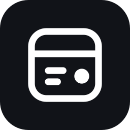

Hello, Gist Artifacts
This page is a Gist Artifact: a GitHub Gist holding a small manifest and a few files. An agent published it with one command, every update is a Git revision, and the link you opened always shows the latest one.
Loading data…
View as table
What is in this artifact
Four files in one Gist, referenced by bare relative name.
artifact.json: the manifest (title, entrypoint, media type)index.html: this page, self-contained apart from the two files belowdata.json: the chart's data, which can be updated without touching the pagelogo.png: a binary file, pushed to the Gist with Git

Per-viewer state
A counter kept in this browser, to show whether the viewer gives the page its own storage.